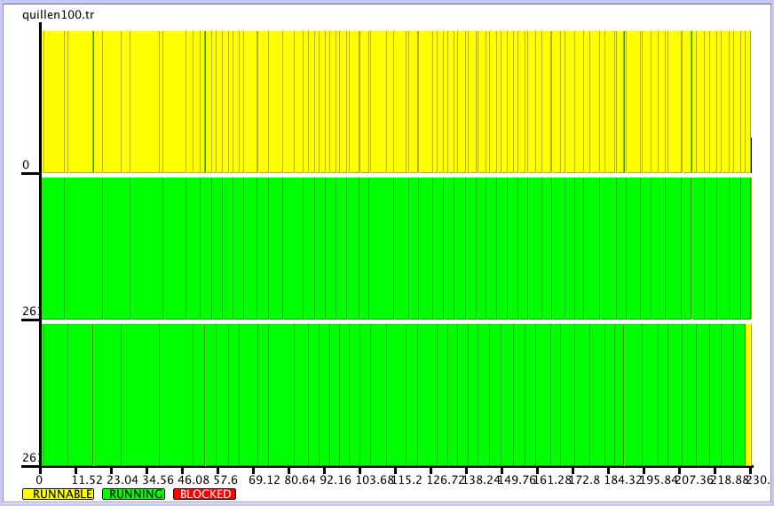
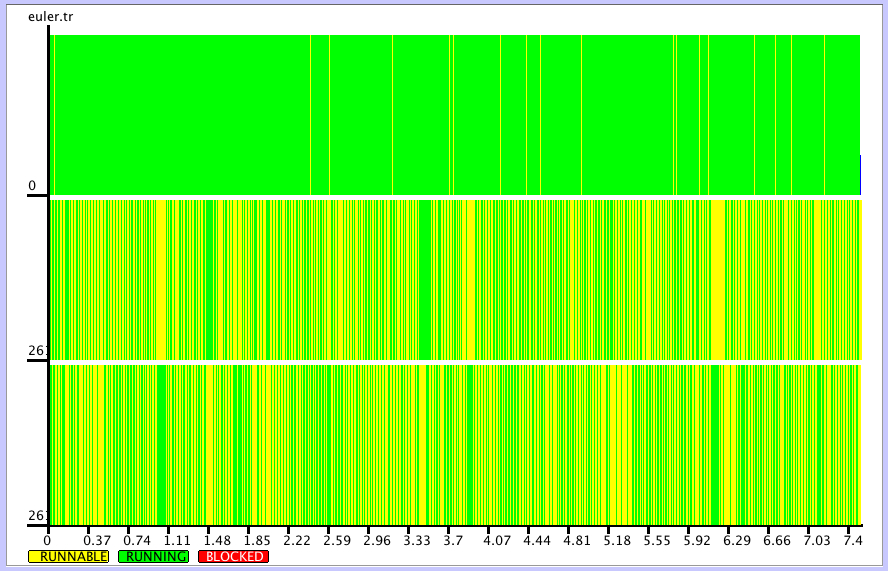

Using procedure calls explained in the previous section, the user can create several requests to multiple services to execute them in parallel, or to wait until the fastest result will be available.
‣ SynchronizeProcesses( process1, process2, ..., processN ) | ( function ) |
‣ SynchronizeProcesses( proclist ) | ( function ) |
Returns: list of records with components object and attributes
The function collects results of from each process given in the argument, and returns the list, \(i\)-th entry of which is the result obtained from the \(i\)-th process. The function accepts both one argument that is a list of processes, and arbitrary number of arguments, each of them being a process.
gap> a:=NewProcess( "WS_Factorial", [10], "localhost", 26133 ); < process at localhost:26133 pid=2064 > gap> b:=NewProcess( "WS_Factorial", [20], "localhost", 26134 ); < process at localhost:26134 pid=1975 > gap> SynchronizeProcesses(a,b); [ rec( attributes := [ [ "call_id", "localhost:26133:2064:yCWBGYFO" ] ], object := 3628800 ), rec( attributes := [ [ "call_id", "localhost:26134:1975:yAAWvGTL" ] ], object := 2432902008176640000 ) ]
‣ FirstProcess( process1, process2, ..., processN ) | ( function ) |
‣ FirstProcess( proclist ) | ( function ) |
Returns: records with components object and attributes
The function waits for the result from each process given in the argument, and returns the result coming first, terminating all remaining processes at the same time. The function accepts both one argument that is a list of processes, and arbitrary number of arguments, each of them being a process.
gap> a:=NewProcess( "WS_Factorial", [10], "localhost", 26133 ); < process at localhost:26133 pid=2064 > gap> b:=NewProcess( "WS_Factorial", [20], "localhost", 26134 ); < process at localhost:26134 pid=1975 > gap> FirstProcess(a,b); rec( attributes := [ [ "call_id", "localhost:26133:2064:mdb8RaO2" ] ], object := 3628800 )
‣ SCSCPservers | ( global variable ) |
SCSCPservers is a list of hosts and ports to search for SCSCP services (which may be not only represented by GAP services, but also by another SCSCP-compliant systems).
It is used by parallel skeletons ParQuickWithSCSCP (8.1-4) and ParListWithSCSCP (8.2-1).
The initial value of this variable is specified in the file scscp/configpar.g and may be reassigned later.
‣ ParQuickWithSCSCP( commands, listargs ) | ( function ) |
Returns: record with components object and attributes
This function is constructed using the FirstProcess (8.1-2). It is useful when it is not known which partcular method is more efficient, because it allows to call in parallel several procedures (given by the list of their names commands) with the same list of arguments listargs (having the same meaning as in EvaluateBySCSCP (6.3-1)) and obtain the result of that procedure call which will be computed faster.
In the example below we call two factorisation methods from the GAP package FactInt to factorise \(2^{150}+1\). The example is selected in such a way that the runtime of these two methods is approximately the same, so you should expect results from both methods in some random order from repeated calls.
gap> ParQuickWithSCSCP( [ "WS_FactorsECM", "WS_FactorsMPQS" ], [ 2^150+1 ] ); rec( attributes := [ [ "call_id", "localhost:26133:53877:GQX8MhC8" ] ], object := [ [ 5, 5, 5, 13, 41, 61, 101, 1201, 1321, 63901 ], [ 2175126601, 15767865236223301 ] ] )
‣ FirstTrueProcess( process1, process2, ..., processN ) | ( function ) |
‣ FirstTrueProcess( proclist ) | ( function ) |
Returns: list of records
The function waits for the result from each process given in the argument, and stops waiting as soon as the first true is returned, abandoning all remaining processes. It retuns a list containing a records with components object and attributes at the position corresponding to the process that returned true. If none of the processes returned true, it will return a complete list of procedure call results.
The function accepts both one argument that is a list of processes, and arbitrary number of arguments, each of them being a process.
In the first example, the second call returns true:
gap> a:=NewProcess( "IsPrimeInt", [2^15013-1], "localhost", 26134 ); < process at localhost:26134 pid=42554 > gap> b:=NewProcess( "IsPrimeInt", [2^521-1], "localhost", 26133 ); < process at localhost:26133 pid=42448 > gap> FirstTrueProcess(a,b); [ , rec( attributes := [ [ "call_id", "localhost:26133:42448:Lz1DL0ON" ] ], object := true ) ]
In the next example both calls return false:
gap> a:=NewProcess( "IsPrimeInt", [2^520-1], "localhost", 26133 ); < process at localhost:26133 pid=42448 > gap> b:=NewProcess( "IsPrimeInt", [2^15013-1], "localhost", 26134 ); < process at localhost:26134 pid=42554 > gap> FirstTrueProcess(a,b); [ rec( attributes := [ [ "call_id", "localhost:26133:42448:nvsk8PQp" ] ], object := false ), rec( attributes := [ [ "call_id", "localhost:26134:42554:JnEYuXL8" ] ], object := false ) ]
In this section we will present more general framework to run parallel computations, which has a number of useful features:
it is implemented purely in GAP;
the client (i.e. master, which orchestrates the computation) will work in UNIX/Linux, Mac OS X and MS Windows;
it may orchestrate both GAP and non-GAP SCSCP servers;
if one of servers (i.e. workers) will be lost, it will retry the computation on another available server;
it allows to add dynamically new workers during the computation on hostnames and ports from a range perviously declared in SCSCPservers (8.1-3).
To configure this functionality, the file scscp/configpar.g assigns the global variable SCSCPservers which specifies a list of hosts and ports to search for SCSCP services (which may be not only represented by GAP services, but also by another SCSCP-compliant systems). See comments in this file for further instructions.
‣ ParListWithSCSCP( listargs, procname ) | ( function ) |
Returns: list
ParListWithSCSCP implements the well-known master-worker skeleton: we have a master (SCSCP client) and a number of workers (SCSCP servers) which obtain pieces of work from the client, perform the required job and report back with the result, waiting for the next job.
It returns the list of the same length as listargs, \(i\)-th element of which is the result of calling the procedure procname with the argument listargs[i].
It accepts two options which should be given as non-negative integers: timeout which specifies in minutes how long the client must wait for the result (if not given, the default value is one hour) and recallfrequency which specifies the number of iterations after which the search for new services will be performed (if not given the default value is zero meaning no such search at all). There is also a boolean option noretry which, if set to true, means that no retrying calls will be performed if the timeout is exceeded and an incomplete resut may be returned.
gap> ParListWithSCSCP( List( [2..6], n -> SymmetricGroup(n)), "WS_IdGroup" ); #I master -> [ "localhost", 26133 ] : SymmetricGroup( [ 1 .. 2 ] ) #I master -> [ "localhost", 26134 ] : SymmetricGroup( [ 1 .. 3 ] ) #I [ "localhost", 26133 ] --> master : [ 2, 1 ] #I master -> [ "localhost", 26133 ] : SymmetricGroup( [ 1 .. 4 ] ) #I [ "localhost", 26134 ] --> master : [ 6, 1 ] #I master -> [ "localhost", 26134 ] : SymmetricGroup( [ 1 .. 5 ] ) #I [ "localhost", 26133 ] --> master : [ 24, 12 ] #I master -> [ "localhost", 26133 ] : SymmetricGroup( [ 1 .. 6 ] ) #I [ "localhost", 26133 ] --> master : [ 720, 763 ] #I [ "localhost", 26134 ] --> master : [ 120, 34 ] [ [ 2, 1 ], [ 6, 1 ], [ 24, 12 ], [ 120, 34 ], [ 720, 763 ] ]
‣ SCSCPreset( ) | ( function ) |
Returns: nothing
If an error occurs during a call of ParQuickWithSCSCP (8.1-4) and ParListWithSCSCP (8.2-1), some of parallel requests may be still running at the remaining services, making them inaccessible for further procedure calls. SCSCPreset resets them by closing all open streams to SCSCP servers.
‣ SCSCPLogTracesToGlobal( testname ) | ( function ) |
‣ SCSCPLogTracesToGlobal( ) | ( function ) |
To analyse the performance of parallel SCSCP framework, we make use of the EdenTV program [BL07] developed initially to visualize the performance of parallel programs written in functional programming language Eden, and now distributed under the GNU Public License and available from http://www.mathematik.uni-marburg.de/~eden/?content=EdenTV.
Called with the string containing the name of the test, this functions turns on writing information about key activity events into trace files in current directories for the client and servers listed SCSCPservers (8.1-3). The trace file will have the name of the format testname.client.tr for the client and testname.<hostname>.<port>.tr for the server. After the test these files should be collected from remote servers and concatenated (e.g. using cat) together with the standard preamble from the file scscp/tracing/stdhead.txt (we recommend to put after the preamble first all traces from servers and then the client's traces to have nicer diagrams). The resulting file then may be opened with EdenTV.
In the following example we use a dual core MacBook laptop to generate trace files for two tests and then show their corresponding trace diagrams:
SCSCPLogTracesToGlobal("quillen100");
ParListWithSCSCP( List( [1..100], i->[512,i]), "QuillenSeriesByIdGroup" );
SCSCPLogTracesToGlobal();
SCSCPLogTracesToGlobal( "euler" );
ParListWithSCSCP( [1..1000], "WS_Phi" );
SCSCPLogTracesToGlobal();
  The diagrams (made on an dual core MacBook laptop), shows that in the first case parallelising is efficient and master successfully distributes load to workers, while in the second case a single computation is just too short, so most of the time is spent on communication. To parallelize the Euler's function example efficiently, tasks must rather be grouped in chunks, which should be enough large to reduce the communication overload, but enough small to ensure that tasks are evenly distributed.
Of course, tracing can be used to investigate communication between a client and a single server in a non-parallel context as well. For this purpose, SCSCPservers (8.1-3) must be modified to contain only one server.
ParListWithSCSCP (8.2-1) can be easily modified to have parallel versions of other list operations like ForAll (Reference: ForAll), ForAny (Reference: ForAny), First (Reference: First), Number (Reference: Number), Filtered (Reference: Filtered), and also to have the skeleton in which the queue may be modified during the computation (for example, to compute orbits). We plan to provide such tools in one of the next versions of the package.
The file scscp/example/karatsuba.g contains an implementation of the Karatsuba multiplication algorithm for polynomials. This algorithm can be easily parallelized since each recursive step creates three recursive calls of the same function for other polynomials. We will not parallelize each recursive call, since this will create enormous data flow. Instead of this we parallelize only the top-level function. For our experiments with parallelising Karatsuba multiplication for polynomials with integer coefficients we used the multi-core workstation, on which we started one SCSCP client and two SCSCP servers. To use it, modify the server configuration file adding to it the command to read the file scscp/example/karatsuba.g, then define there the following function
KaratsubaPolynomialMultiplicationExtRepByString:=function(s1,s2)
return String( KaratsubaPolynomialMultiplicationExtRep(
EvalString(s1), EvalString(s2) ) );
end;;
and finally add the following lines to made it available as an SCSCP procedure under the name WS_Karatsuba:
InstallSCSCPprocedure( "WS_Karatsuba",
KaratsubaPolynomialMultiplicationExtRepByString);
(we do not include it into the default scscp/example/myserver.g since the code contains a call to EvalString (Reference: EvalString)).
This function provides a "bridge" between the client's function KaratsubaPolynomialMultiplicationWS and the server's function KaratsubaPolynomialMultiplicationExtRep, which performs the actual work on the server. WS_Karatsuba converts its string arguments into internal representation of univariate polynomials (basically, lists of integers) and then converts the result back into string (since such data exchange format was chosen). We are going to parallelize the following part of the client's code:
...
u := KaratsubaPolynomialMultiplicationExtRep(f1,g1);
v := KaratsubaPolynomialMultiplicationExtRep(f0,g0);
w := KaratsubaPolynomialMultiplicationExtRep(
PlusLaurentPolynomialsExtRep(f1,f0),
PlusLaurentPolynomialsExtRep(g1,g0) );
...
and this can be done straightforwardly - we replace two first calls by calls of the appropriate SCSCP services, then perform the 3rd call locally and then collect the results from the two remote calls:
...
u := NewProcess( "WS_Karatsuba",[ String(f1), String(g1) ],"localhost", 26133);
v := NewProcess( "WS_Karatsuba",[ String(f0), String(g0) ],"localhost", 26134);
w := KaratsubaPolynomialMultiplicationExtRep(
PlusLaurentPolynomialsExtRep(f1,f0),
PlusLaurentPolynomialsExtRep(g1,g0) );
wsresult:=SynchronizeProcesses2( u,v );
u := EvalString( wsresult[1].object );
v := EvalString( wsresult[2].object );
...
We obtain almost double speedup on three cores on randomly generated polynomials of degree 32000:
gap> ReadPackage("scscp/example/karatsuba.g"); gap> fam:=FamilyObj(1);; gap> f:=LaurentPolynomialByCoefficients( fam, > List([1..32000],i->Random(Integers)), 0, 1 );; gap> g:=LaurentPolynomialByCoefficients( fam, > List([1..32000],i->Random(Integers)), 0, 1 );; gap> t2:=KaratsubaPolynomialMultiplication(f,g);;time; 5892 gap> t3:=KaratsubaPolynomialMultiplicationWS(f,g);;time; 2974
generated by GAPDoc2HTML